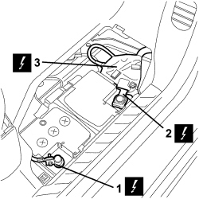
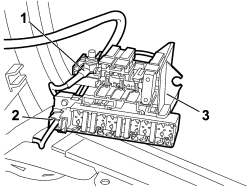
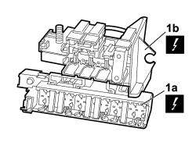

5530B40 SUPPLY BOX ON BATTERY (LINK BATTERY AND FUSE BOX) - R R
- Path
- Procedures > 55 ELECTRICAL EQUIPMENT > 5530 CURRENT GENERATION > 5530B BATTERY AND LEADS > 5530B40 SUPPLY BOX ON BATTERY (LINK BATTERY AND FUSE BOX) - R R
- Kind
- repair procedure (removal / refitting; the operation number is the code)
- Applies to
- all engines; all production periods
- Interactive page
- https://sloeber94.github.io/elrnDB-fUlss/en/#/179002327
Applies to: all engines; all production periods
 Removing
Removing
 Refitting
RefittingValid for versions from 10/05
See
Op. 5530B56 BATTERY DRIP TRAY COVER - R.R.
1. Open the clip and disconnect the negative battery lead.
2. Open the clip and disconnect the positive battery lead.
3. Undo the fixing bolt and release the supply box from the housing.

Applies to: all engines; all production periods
1. Undo the nut fixing the positive lead.
2. Disconnect the electrical connections.
3. Remove the supply box from the vehicle.

Applies to: all engines; all production periods
1. Working on the retaining clips, separate the additional fuse box (1a) from the maxi fuse box (1b).
Connector | Description | |
|---|---|---|
1a | B098 | ADDITIONAL FUSE BOX |
Connector | Description | |
|---|---|---|
1b | B005 | MAXI FUSE BOX |

Applies to: all engines; all production periods
Refitting
Removing- Fit the additional fuse box on the maxi fuse box and check that the components are not damaged or deteriorated.
Connector | Description | |
|---|---|---|
B098 | ADDITIONAL FUSE BOX |
Connector | Description | |
|---|---|---|
B005 | MAXI FUSE BOX |
- Connect the electrical connections and tighten the nut fastening the positive lead.
- Place the box in its housing in the battery compartment and tighten the fixing bolt.
- Connect the positive terminal to the battery and tighten the retainer.
- Connect the negative battery terminal and tighten the retainer.
See